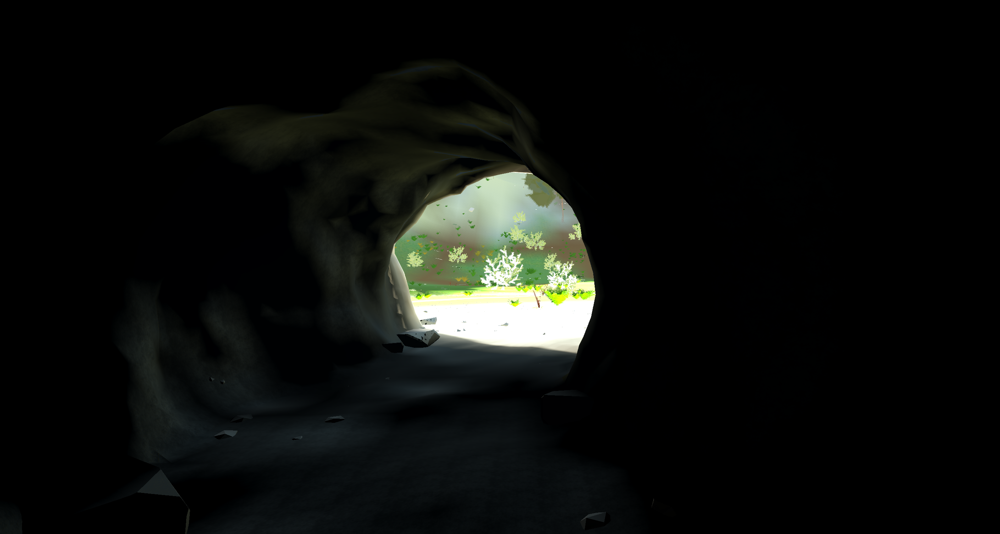

Loading a procedural world in Godot on the web
Transect builds a lot of its meshes on the device while the game loads. This helped me fit the development preview into a 64 MB artifact budget, but it also meant my phone had to do the work before I could go for a walk.
I ended up spending a lot of time on loading. Some of it was asset construction, some was graphics work, and some was lighting data that really didn’t need to be calculated on the phone. They needed different fixes.
Working within 64 MB
The 64 MB limit came from the tooling I used to preview the game on my phone. I hadn’t chosen it as an ideal download size. The Godot web runtime took roughly 36 MB, and one measured development build came to 52.4 MB. That left 11.6 MB for anything else I wanted to add.
What fit in 64 MB
- ≈36 MBGodot runtime
- ≈16.4 MBRest of the build
- 11.6 MBRoom remaining
Generating geometry during loading kept mesh data out of the download. Shipping prepared geometry would use more space but save the device some work. I could also keep prepared assets outside the package and fetch them separately, though the player would still have to download and load them.
There wasn’t an option that avoided all of those costs. I had to decide which ones were reasonable for the preview and which were reasonable for the standalone release.
The loader could only stop between builds
The start screen prepared shared assets while the player looked at the menu. In an early single-threaded run, constructing 153 asset levels of detail took 52 seconds. Individual birch-clump builds took between 3.8 and 5.8 seconds, and several other builds took around a second or more.
I had given the loader a frame budget. It checked how much time it had used and stopped when it reached its allowance. The problem was that it only checked between builds. Once it started a five-second build, it had to finish it before it could check again.
In headless Chromium with software WebGL, the start screen stalled for as much as 8.6 seconds. A 50-second observation had 26 frames longer than 250 milliseconds. Those are timings from that test machine, but they made the problem pretty clear: the menu was sharing the main thread with operations that could take seconds.
Getting threads working on the web
Native builds already used workers for asset construction. The original web build didn’t, because the host couldn’t provide the response headers needed for cross-origin isolation.
Godot’s threaded web runtime uses shared memory through SharedArrayBuffer. Browsers restrict that to isolated pages, so turning on threads in the export settings wasn’t enough. The hosting setup also needed these headers:
Cross-Origin-Opener-Policy: same-origin
Cross-Origin-Embedder-Policy: require-corpOn the original static host, a service worker added the headers to the page’s responses. The page registered the worker, reloaded once, and checked crossOriginIsolated. The release could then ship both Godot runtimes and select one when the page loaded.
With workers constructing assets, the worst frame during those builds fell to about 350 milliseconds in the software-WebGL tests. Preparing distant-object images still caused pauses as long as 1.6 seconds.
The versions built different asset sets, so I wouldn’t use those numbers as a controlled threading benchmark. They did show that moving the construction work off the main thread made the menu much more responsive.
The preview still needed to work without threads
The preview had room for one engine runtime. Including both would put it over the artifact budget. The standalone release had room for both, with the player downloading whichever one the page selected.
For the single-threaded preview, I kept cheaper preparation in the menu and moved expensive builds to the setting-off screen. At least there the player was expecting to wait. Preparing more upfront could prevent interruptions during the walk, but it also took longer and kept more prepared data in memory.
Smaller, interruptible jobs would give the loader more chances to yield. Prepared downloads or loading transitions were other options. Threads helped where I could use them, but I still had to decide how much should be ready before the walk started.
The cave still hitched

Even with threads available in the standalone build, walking into the cave caused problems. An iPhone capture recorded pauses of 7.9, 2.3, 1.6, and 1.1 seconds. During those hitches, the game’s scripts only accounted for 2–15 milliseconds per frame.
I added instrumentation around potentially blocking WebGL calls and repeated the route in headless Chromium with software WebGL: walk to the shelter, enter the dark, and switch on the head torch.
Mesh upload and shader work were small at the cave mouth. When the torch came on, though, the first frame made 91 shader-related calls. Those calls took about 1.7 seconds. The complete hitch was about 5.3 seconds, with only 11 milliseconds in game scripts.
That didn’t account for the whole pause. It did show a substantial amount of shader work when the lighting changed, while mesh upload was negligible in that frame. Moving asset construction to workers wasn’t enough to fix it.
Trying a few fixes
I tried warming the shaders during loading, putting a torch contribution directly in the material shaders, and running the original torch on the threaded engine.
How long the torch stalled
Headless Chromium · software WebGL · seconds
| Approach | Shader-related calls at first light | Recorded hitches | Extra loading work |
|---|---|---|---|
| Existing torch | 91 | 5.6 s and 1.9 s | None |
| Attempted warm-up | 91 | 5.9 s and 2.4 s | About 3.6 s |
| Torch contribution in material shaders | 0 | None in this test | None |
| Existing torch, threaded runtime | 91 | 5.5 s | None |
These are results from the software-rendered test, not phone frame-rate measurements. The call counts are API calls, not counts of distinct shader variants.
The warm-up attempt added about 3.6 seconds to loading and still didn’t prepare the combination the torch needed. The threaded runtime had essentially the same first-use stall. In the Godot build I tested, that WebGL work still happened within the page’s animation frame; enabling workers hadn’t made compilation asynchronous.
The material-shader torch avoided the compilation burst in this test, which was encouraging. But the cave was darker, and the beam didn’t cast the same shadows. I’d need to do more visual work on it before replacing the original light.
Would a rendering thread help?
Moving rendering to another thread could let other work continue during compilation. I don’t think that alone would solve what the player sees. If the rendering thread is waiting on a shader, it still can’t finish the next frame. The simulation could keep running while the picture stayed frozen.
An asynchronous compilation path seems more useful to investigate. The tested engine didn’t request KHR_parallel_shader_compile. Using it would mean checking for completion without blocking, and deciding what to draw while a shader wasn’t ready. That would need engine changes and more testing.
Lighting data was worth preparing beforehand
Indirect-light preparation was easier to make a decision about. One measured subject took about 2.3 milliseconds to construct its shape and 19.8 seconds to calculate its lighting data natively. In the current implementation, that calculation had to run on the main thread and couldn’t be broken into smaller operations.
That was too much work to do during the walk. The build now prepares the lighting data separately, and the device constructs the geometry and attaches the matching data. In the measured set, 48 lighting files totalled 282 KB. That seemed like a pretty good use of the download budget.
Where the work happens
- Before downloadLighting dataCalculated ahead of time and included in the download.
- During loadingGeometryBuilt on the device, using workers when available.
- During the walkShadersTurning on the torch can require a shader that hasn’t been used yet.
Where I ended up
Workers helped with asset construction. For the single-threaded preview, I still needed to move expensive work to the loading screen, split it up where possible, or prepare it beforehand. The cave needed separate graphics measurements, and the expensive lighting calculation was better done in the build.
I also still have to watch memory. Keeping the package small doesn’t mean the finished resources take up little space once the game is running.
I’ll keep working on this in Transect. If you want to try the walk, it’s available in the browser. The asset catalog has the resulting assets for other developers to inspect and use.